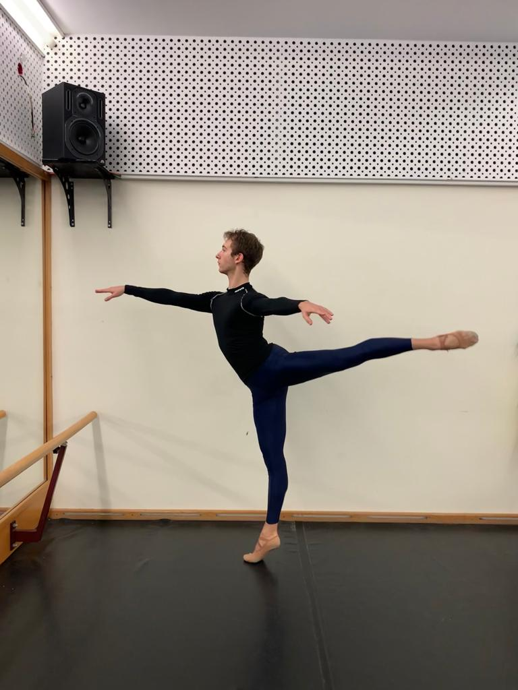

Birth date: 10th December 1999. Height: 175cm Weight: 62kg Nationality: Hungarian
Graduation: 2019 at the Hungarian Dance Academy. Coreografed by Barna Mónika, Szakály György and Igor Kirov.
Studies: 9 years Classical Ballet, 4 years Modern Dance, modern ballroom dance, 4 years pa de dux class, 4 years hungarian folk dance. Stage experience: Hungarian National Opera: in The Nutcracker pa de trois, Caramazov Brothers, Giselle, Anna Karenina, Manon Work experience: From 2019 in Europa Ballett St.Pölten Austria--currently Performances: Madame Butterfly by Peter Breuer, Coco Chanel by Peter Brauer, Amadeus Mozart by Renato Zanella, American tour new years concert in FLorida, Madame Butterfly Wiener Statsoper,
Nutcracker male solo in Osijek.
